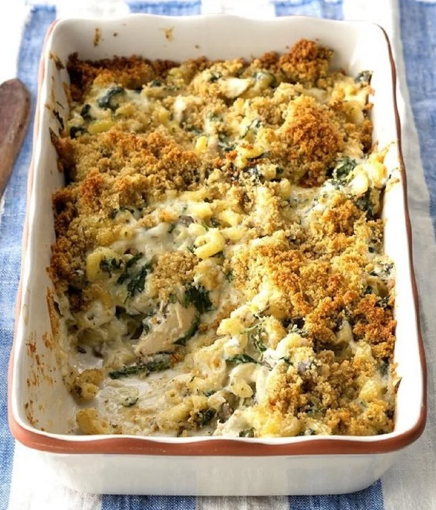

Creamy Chicken Florentine Pasta

Directions
Creamy and comforting, this creamy chicken Florentine pasta is sure to be a hit at
dinnertime. The toasty bread crumb topping delivers a bit of a crunch. You can easily
feed more by increasing your pasta.
Ingredients
- 2 cups uncooked elbow macaroni
- 3 cups shredded cooked chicken
- 1 cup shredded Swiss cheese
- 1 cup shredded mozzarella cheese
- 1/2 cup mayaonnaise
- 1/4 cup minced fresh basil
- 1 small onion, diced
- 16 ounces baby spincach
- 1 (10.5 ounce) can condensed creame of mushroom soup
- 1 teaspoon garlic powder
- 1/2 teaspoon dried thyme
- 1/2 teaspoon ground black pepper
- 1/2 cup seasoned bread crumbs
- 2 tablespoons butter, melted
Steps
Step 1
Preheat the oven to 350 degrees F (175 degrees C).Step 2
Bring a large pot of lightly salted water to a boil. Cook elbow macaroni
in the boiling water, stirring occasionally, until tender yet firm to the
bite, about 8 minutes.Step 3
While the macaroni is cooking, combine chicken, Swiss and mozzarella cheeses,
mayonnaise, basil, and onion in a bowl. Add spinach, condensed soup, garlic powder,
thyme, and pepper; mix to combine.Step 4
Drain macaroni. Gently stir into the chicken mixture. Transfer to an ungreased 9x13-inch
baking dish.Step 5
Toss bread crumbs with melted butter; sprinkle over the casserole.Step 6
Bake, uncovered, in the preheated oven until bubbly, 40 to 45 minutes.